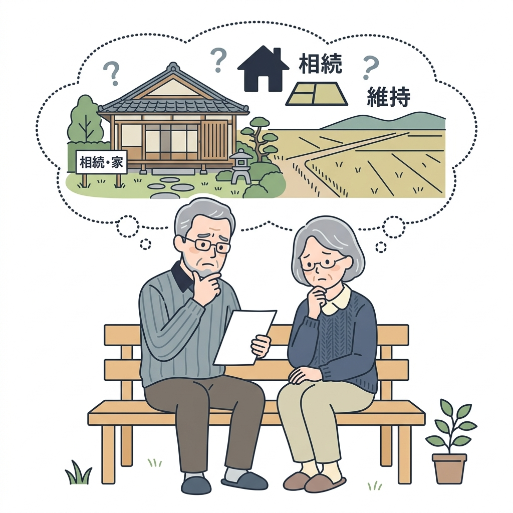

その「負動産」、
お金を払ってでも手放しませんか？
他社で断られた田舎の空き家・山林を、専属の司法書士・土地家屋調査士チームが最短1〜2週間であなたの名義から完全に切り離します。顧客満足度100%を目指す、まったく新しい引き取り代行サービス。
登記引き取り
相談対応

相続した実家や土地、
どうしたら良いの？
処分困難な「負動産」を抱える多くの方が、同じ葛藤を持っています。
誰に、何を、どう相談したら良いかわからない
どこに持っていっても「売れない」と断られ、誰を信じて手続きをすれば良いのか分からず悩んでいる。
実家を処分（有料引き取り）するのに罪悪感がある
親が残してくれた家を有料で手放す（処分する）ことに対して、心理的な抵抗感や罪悪感を感じている。
名義や境界が複雑で、周りに知られたくない
相続登記が完了していなかったり、境界が曖昧で揉め事にならないか不安。できれば誰にも知られずに済ませたい。
家の中に家具や荷物が残ったままで、他社に断られた
実家の中がゴミ屋敷のようになっていたり、古い家具が大量に残っていて、片付ける費用も出せない。
毎年税金だけを払い続けていて、決断ができない
「いつかどうにかしなければ」と思いながらも、毎年固定資産税や管理費だけが引き落とされ、時間だけが過ぎている。
不動産会社に「売れない」と断られた物件も、
法的な安心と共にお引き受けします
私たちは、一般の仲介や売買では取引されない、いわゆる「負動産（山林、原野、古民家など）」の有料処分に特化した専門家チーム窓口です。
「処分できずに子どもに負担を残したくない」「管理責任の不安から解放されたい」というお客様の切実な声に向き合い、提携する司法書士・土地家屋調査士と一丸となって、郵送だけで完了する安全な所有権移転の仕組みを構築しました。
司法書士・土地家屋調査士 専属連携チーム
| 対応内容 | 相続登記未了案件の段取り、所有権の法的な移転登記手続き、実測・境界の法的調整 |
|---|---|
| 対応エリア | 京都府・大阪府・滋賀県・兵庫県・和歌山県（関西全域） |
負動産リサイクルセンターが選ばれる3つの特徴
専属の専門ネットワークがあるからこそできる、安心 of 処分・引き取り体制
専属司法書士連携による
自動登記セットアップ
あなたが提出したデータを元に、提携司法書士が契約書や登記書類をすべて自動作成。あなたは実印を押して返送するだけで、安全に所有権移転を完了できます。
相続登記の未了・境界曖昧な物件も
100%ワンストップ対応
「まだ相続していない」「土地の境界が分からない」という厄介な状態でも、土地家屋調査士チームと連携し、窓口一元化で調査・登記のセットアップまでお任せいただけます。
引き取り後の安心
専門事業者へのリサイクル
引き取った山林や古民家は、そのまま放置せず、林業保全や建物再生・空き家活用を行う信頼できる専門パートナー企業へ引き継ぎ、社会資源として再循環させます。
なぜ「有料引き取り」なのか？
費用をいただく理由と、その透明性について
当サービスは、一般的な「仲介（売って現金化する）」ではなく、「確定したお見積り費用（処分代）を一括でお支払いいただき、当社が所有権と管理責任を引き受ける」スキームです。
お支払いいただく費用の主な内訳（明朗会計）
維持管理コスト
将来数十年にわたって生じる草刈り、見回り、倒壊防止の最低限の管理コストに充当します。
固定資産税の原資
引き取り後も毎年地方自治体へ納付する必要がある固定資産税の長期的原資を確保します。
法的登記手続き費用
提携司法書士への委託報酬、登録免許税など、確実な所有権移転に必要な実費です。
調査・開発費
土地を再定義し、新しい価値へリサイクル（再生・環境管理）するための調査費用です。
引き取り後の「リサイクル」スキーム
社会資源としての再循環（リサイクル）について
専門事業者への引き継ぎによる、価値の再循環：
お引き取りした山林や空き家は、独自のデータ分析や現代のニーズを掛け合わせ、
その分野を専門とする信頼性の高いパートナー事業者へ確実に引き継ぎ（譲渡・提携）を行い、社会へ還元していきます。
山林・原野の専門業者へ引き継ぎ
手入れの途絶えた山林や原野は、そのまま放置すると土砂崩れや災害などのリスクにつながります。当センターで引き取った土地は、地域の安全管理や林業保全などを行う専門の事業者へ適切に引き継ぎを行います。
建物・古民家再生の専門業者へ引き継ぎ
放置された古民家や空き家は、地域の景観悪化や防犯上の不安材料となります。当センターで引き取った建物や跡地は、地域活性化や不動産再生、土地活用などを行う専門の事業者へ引き継ぎ、適切な維持・活用を目指します。
一目でわかる「他社・通常の仲介」との違い
当店の負動産リサイクルが圧倒的に選ばれる理由
| 比較項目 | 通常の不動産仲介 / 他社 | 当店の「負動産リサイクル」 |
|---|---|---|
| 専門家への相談・手配 | 自分で探して個別調整が必要 （司法書士や土地家屋調査士と個別に何度もやり取り…） | 専属 of プロ集団がワンストップ連携 （窓口は1つ。裏側でチームが自動連携） |
| 手続きにかかる期間 |
買い手探しや書類のやり取りで 3ヶ月〜1年以上 |
チーム連携による一気通貫の手続きで 最短7日〜2週間 |
法改正で仲介上限「33万円」になっても、
売れない物件は敬遠されます
2024年の宅地建物取引業法の改正により、400万円以下の低廉な空き家等の売買における媒介報酬（仲介手数料）の上限が最大33万円まで受領可能になりました。
しかし、現実には以下の理由から、既存の不動産会社は積極的な仲介を行っていません。
- 買い手がそもそもいない：京都北部の山間部やアクセス困難な原野、老朽化しすぎた空き家は、買い手を募っても反響がゼロです。
- 仲介手数料33万円でも割に合わない：調査費用や境界の確認、購入希望者の現地案内など、契約までの手間と交通費を考えると不動産会社にとっては大赤字になります。
あなたが動かなくていい理由
プロ集団の「完全自動連携」により、面倒な手続きをお任せ
専門家チームが裏側でフル稼働。あなたは「待つだけ」
通常の不動産売買では、自分で司法書士を探したり、複雑な相続登記や測量の相談に駆け込んだりと、多くの時間と労力がかかります。
当店では、経験豊富な司法書士や土地家屋調査士と強力なタッグを組んだ「専用の連携システム」を構築しています。
スマホで査定依頼するだけ
対面不要・サインして返送して待つのみ
ワンストップで受付
裏側で各専門家と自動連携・指示配給
登記書類の自動セットアップ
複雑な相続・未登記・境界問題を解決
提携司法書士による「自動登記セットアップ」
あなたが入力・提出したデータに基づき、提携司法書士が契約書や登記書類をスマートに自動作成。郵送だけで確実に所有権移転を完了させます。
複雑な「相続・未登記案件」も100%お任せ
「まだ相続登記が済んでいない」「土地の境界や筆がよく分からない」というややこしい負動産でも、専門家チームがダイレクトに調査・段取りを行うため、トラブルの心配は一切ありません。
安全・適正な取引をお約束する「3つの安心宣言」
お客様の不安を解消し、最後まで法的に安全な取引を徹底いたします。
登記申請完了後の【完全後払い制】
お支払いは、提携司法書士が法務局へ所有権移転登記の「申請手続き」を完了した時点で行います。契約前の手付金や事前調査費用などの前払い請求は一切ありませんのでご安心ください。
お見積り確定後の【追加費用ゼロ】
事前に行う物件情報の調査や現地状況確認に基づき、ご提示した「確定お見積り金額」から、ご契約後に追加の処分費や草刈り代、手数料などを上乗せして請求することは絶対にいたしません。
所有権移転の【法的完了証明】の提示
登記手続きが完了した後、法務局が発行する「登記識別情報通知（旧・権利証）の写し」または「登記事項証明書（登記簿謄本）」を郵送にてお渡しし、法的に名義が離れたことを書面で証明します。
「完全非対面・郵送のみ」の3つのステップ
来店も対面も不要。ご自宅にいながらスピーディに手放せます
スマホで30秒かんたん査定（来店不要）
公式LINEまたはフォームから、住所（識別情報）や分かる範囲の情報を送るだけ。
プロによる高速セットアップ（対面不要）
届いた情報を元に、当店と提携司法書士・土地家屋調査士が即座に連携して書類一式を作成し、ご自宅へ郵送します。あなたはサインと実印を押して返送するだけです。
最短7日〜で引き取り完了（迅速手続き）
書類が揃えば、チームが一気に所有権移転登記を完了させて手続き終了。固定資産税や維持管理の不安から**100%解放**されます。
よくある質問
お客様から寄せられるご質問に率直にお答えします
はい、基本的には綾部市・福知山市・南丹市・京丹波町における空き家、山林、原野、傾いた建物、再建築不可の土地、農地（条件あり）など幅広く対応しております。ただし、隣地との境界紛争が現在進行形で裁判沙汰になっている物件、他人の抵当権や差し押さえが入ったままの物件、反社会的勢力との関わりがある物件など、法的な著しい障害がある場合はお断りすることがございます。まずは査定にてご相談ください。
物件の場所、地目（宅地・山林・原野）、固定資産税の年税額、管理の難易度（道路への面し方、荒れ具合）、そして登記移転の実費（登録免許税や司法書士の報酬）などを総合的に勘案して算出します。概ね数万円〜数百万円の範囲となりますが、一度の支払いで今後の無限の管理負担と税金から解放されるため、将来のコストに比べて非常にリーズナブルになるケースがほとんどです。
いいえ、査定とお見積もりは完全に無料ですし、見積額を見てご納得いただけない場合はお断りいただいて全く問題ありません。強引な営業や不要な売り込み等は一切行いませんので、どうぞご安心の上お気軽にご相談ください。
もちろん可能です。査定はお送りいただいた情報と公図等のネット調査・現地確認（お客様の立ち会いは原則不要）で行います。ご契約や司法書士への登記委任手続きも、郵送やWeb会議などを通じて完全にリモートで完結できます。これまでにも関東や関西都市部在住 of オーナー様から多数ご依頼をいただいております。
京都北部の負動産問題、
私たちにお任せください。
「もう手放したい」「次の世代にこの悩みを残したくない」とお考えなら、今すぐ第一歩を踏み出しましょう。 私たちは地元での信頼と誠実な対応をお約束いたします。
スマホで物件の写真や納税通知書の写真を送るだけ！24時間いつでも簡単に査定依頼が可能です。専門家チームへの相談もLINEからワンタップで行えます。
LINEでお友達追加して査定する査定・お見積もりフォーム
以下の項目をご入力の上、送信してください。原則2営業日以内に担当よりご連絡いたします。